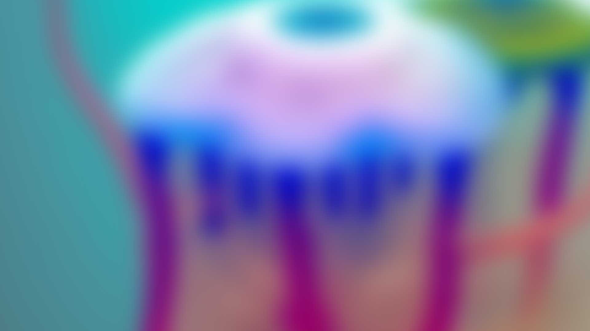
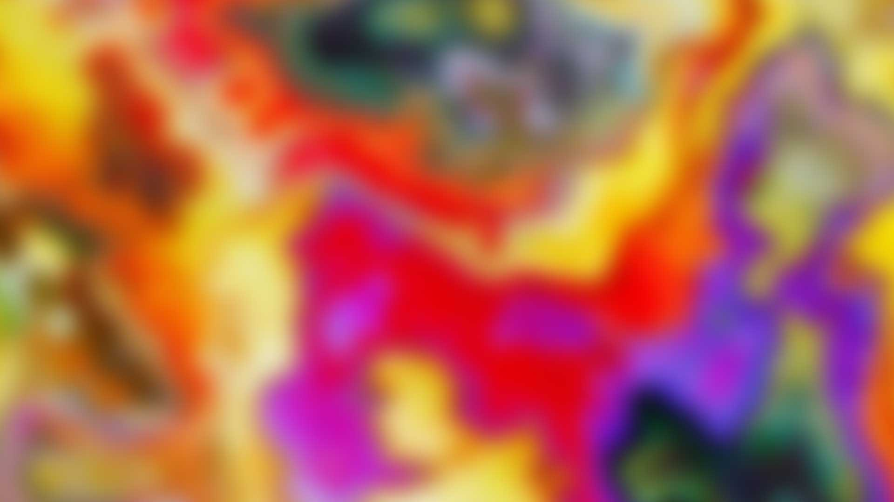
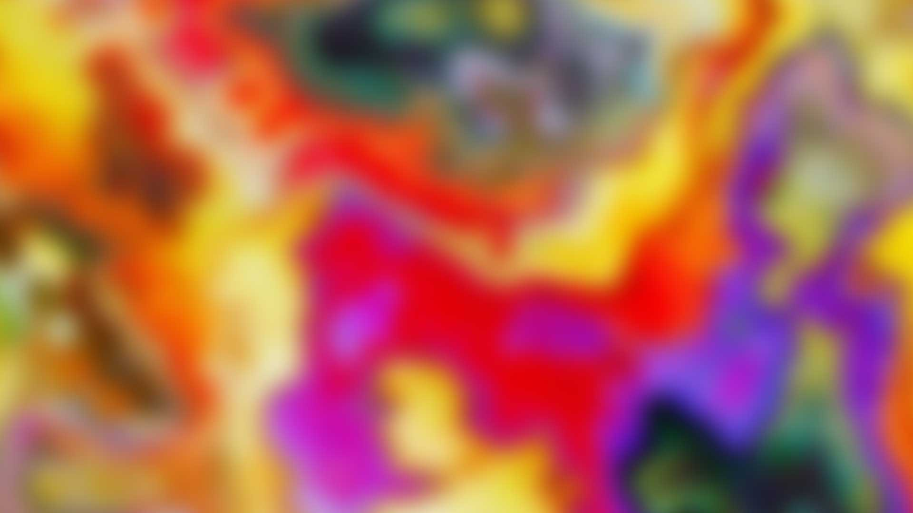
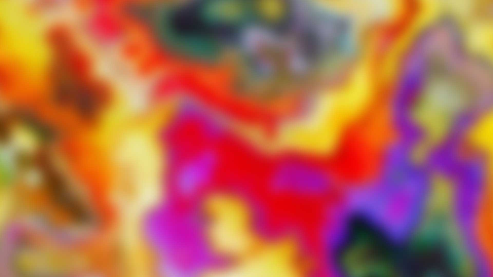
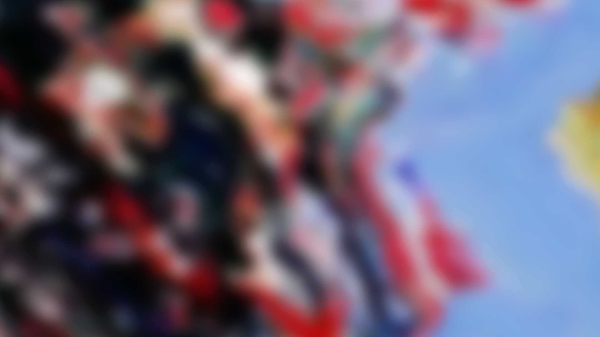
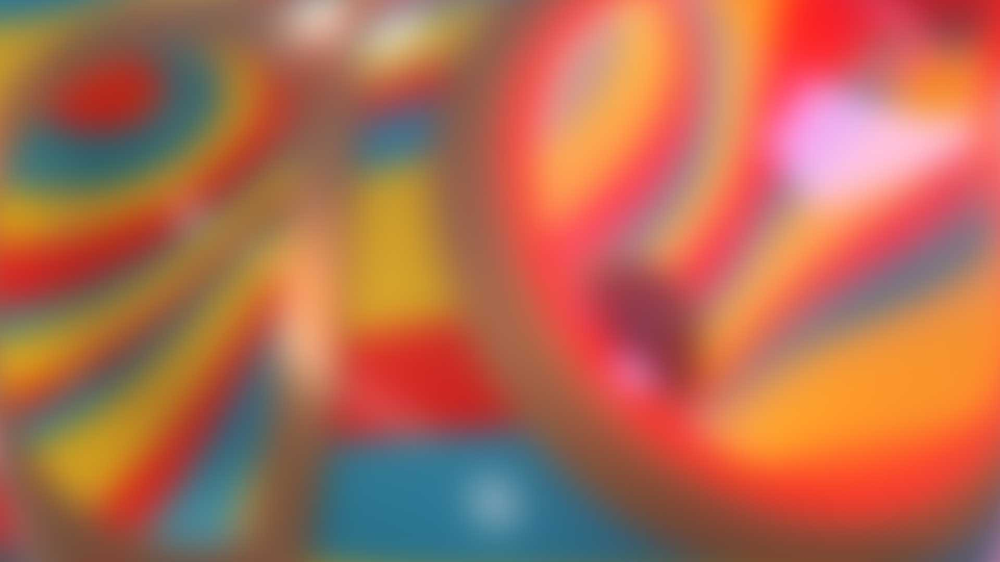
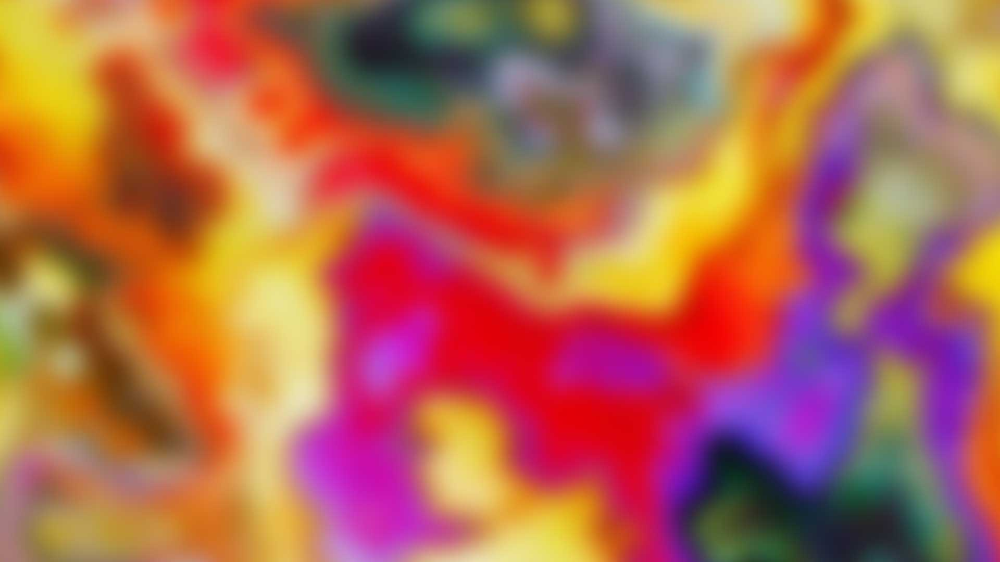

 




FARVisual Identity |
Client | FAR | |
|---|---|---|---|
| Discipline | Art Direction, Design | ||
| By | LUKEABC | Date | 2024 |
A visual identity system for artist Francisco Alarcón (FAR), whose practice spans multiple collections — each with its own visual language, material, and register. The challenge was to create a single identity framework that could hold them all together without flattening what made each one distinct.
The system needed to work across collections that already existed and be open enough that new additions could slot in using the same process.
The mechanism: take a cross-section of each collection's artwork, blur and zoom it to the point of abstraction, then set a unique wordmark over it. Each collection gets its own typeface — but the blur treatment is consistent across all of them. Every wordmark also works in mono.
The result is an identity that draws directly from the work itself. No imposed palette, no external brand language — just the artist's own output, abstracted into something that reads as a system. And because the process is repeatable, any new collection can be added without redesigning anything.


| Collection | Typeface |
|---|---|
| FLARES | Georgia Italic |
| SOLIDS | Pointy Regular |
| THE UMWELT | Cristik Regular |
| INFINITES AI | Glancyr Bold Italic |
| INFINITES IRL | Glancyr Light |
| QUASARS | Dubbo Regular |
| Role | Name |
|---|---|
| Art Direction, Design | Lukeabc |
| Artist | Francisco Alarcón (FAR) |
| Year | 2024 |